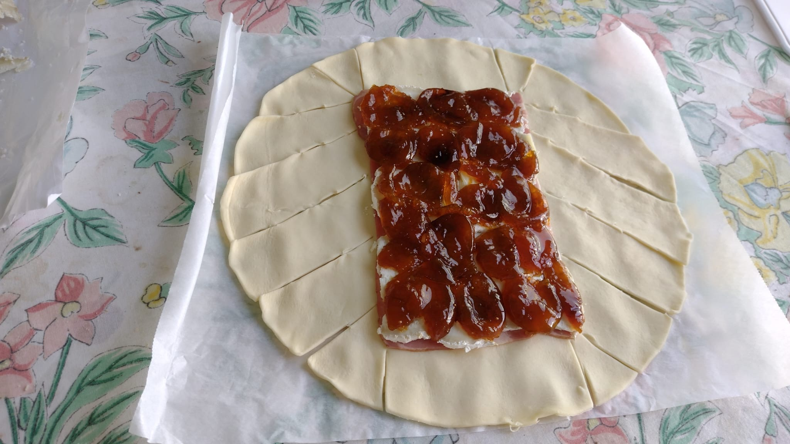
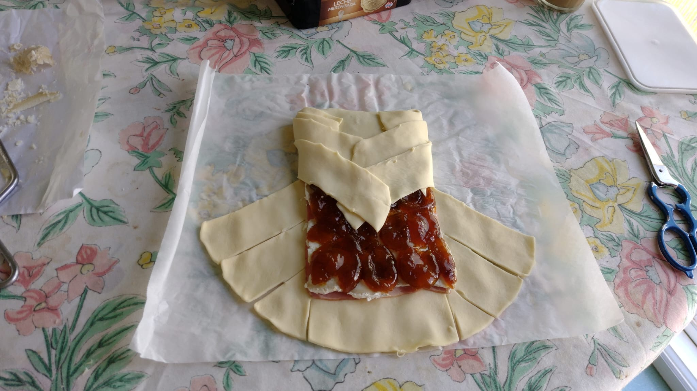
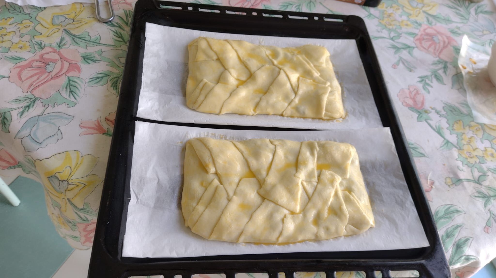
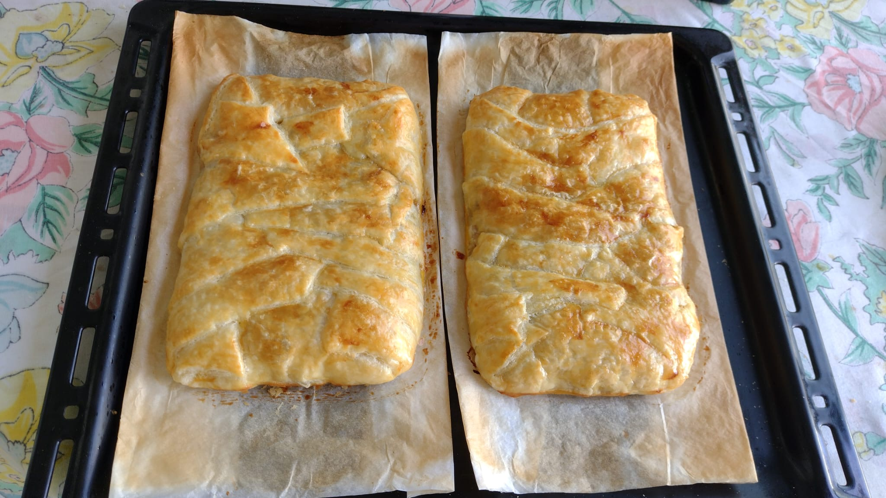

Hojaldre crujiente relleno de bacon, queso de cabra y dátiles (o higos confitados): el contraste dulce-salado perfecto para compartir.
| Ingrediente | Cantidad aproximada |
|---|---|
| 🥐 Masa de hojaldre fresca (del Lupa) | 1 plancha |
| 🥓 Bacon en tiras | 5 tiras |
| 🧀 Rulo de queso de cabra | 1 rulo |
| 🌴 Dátiles (o higos confitados) | al gusto |
| 🥚 Huevo (para pincelar) | 1 ud |




Cálculo estimado con cantidades típicas: 1 plancha de hojaldre fresco (~230 g), 5 tiras de bacon (~100 g), 1 rulo de queso de cabra (~150 g), ~100 g de dátiles y ~30 g de huevo batido utilizado para pincelar.
| Ingrediente | Cantidad est. | kcal | Proteínas | Hidratos | Grasas |
|---|---|---|---|---|---|
| Masa de hojaldre | 230 g | ≈846 | 11,5 g | 69,0 g | 59,8 g |
| Bacon | 100 g | ≈270 | 14,0 g | 1,0 g | 23,0 g |
| Queso de cabra | 150 g | ≈435 | 28,5 g | 1,5 g | 34,5 g |
| Dátiles | 100 g | ≈282 | 2,0 g | 63,0 g | 0,4 g |
| Huevo (pincelar) | 30 g | ≈43 | 3,8 g | 0,2 g | 2,9 g |
| TOTAL RECETA (~610 g) | — | ≈1876 | ≈59,8 g | ≈134,7 g | ≈120,5 g |
| Nutriente | Por 100 g |
|---|---|
| 🔥 Calorías | ≈308 kcal |
| 💪 Proteínas | ≈9,8 g |
| 🍞 Hidratos de carbono | ≈22,1 g |
| 🥑 Grasas | ≈19,8 g |